2.1 Программирование перевода чисел из одной системы счисления в другую
2.3 О языках программирования и трансляторах
2.4 История языков программирования
Основные темы параграфа:
*Перевод двоичного числа в десятичную систему счисления;
*Перевод десятичного числа в двоичную систему счисления.
В $ 18 учебника для 8 класса рассказано о двоичной системе счисления, которая используется в компьютере для представления чисел и выполнения вычислений с ними. Там же описаны правила, по которым можно вручную выполнить перевод двоичных чисел в десятичную систему счисления и обратный перевод — десятичных чисел в двоичные. Рассмотрим программы на Паскале для автоматического перевода чисел из одной системы счисления в другую. Ограничимся переводом целых чисел.
Программа перевода двоичного числа в десятичную систему счисления
Рассмотрим программу на Паскале, по которой происходит пере-
вод целого двоичного числа в десятичную систему.
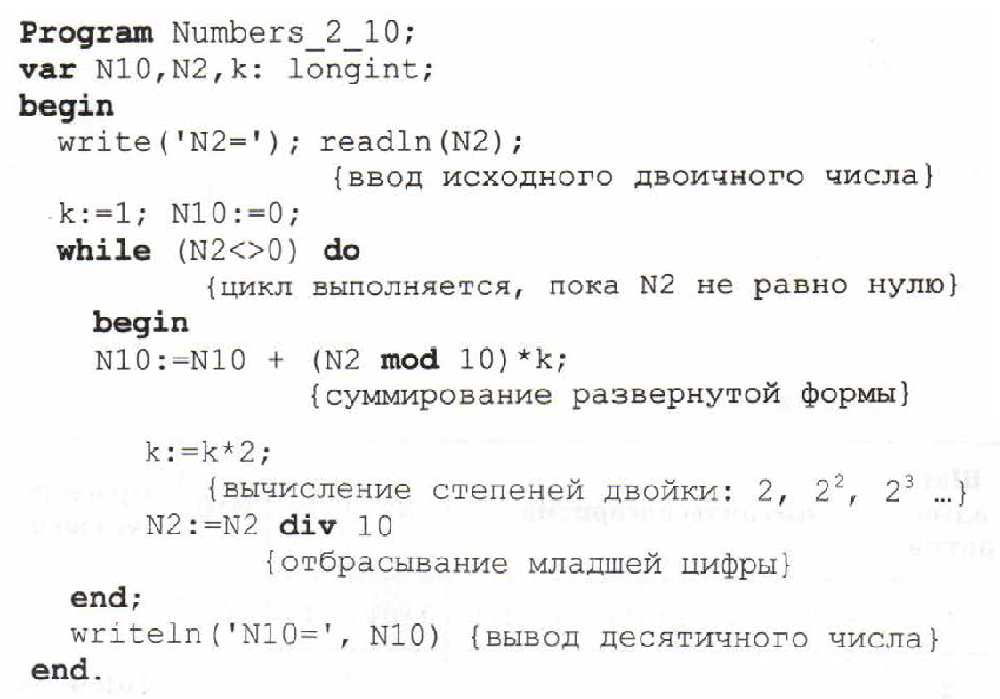
В программе использованы следующие переменные:
№2 — целое двоичное число — исходное данное;
№10 — десятичное число — результат;
Тип longint — длинный целый тип. Значения величин этого типа
лежат в диапазоне от —2 147 483 648 до 2 147 483 647. Значит, данная программа может работать с числами, не более чем 9-значными.
В этой программе используются две незнакомые вам операции
с целыми числами. Операция div — целочисленное деление. Дели-
мое и делитель являются целыми числами, а результат — целая
часть частного. Например: 7 div 2 = 3. Для отбрасывания младше-
го разряда целого числа используется целочисленное деление на 10.Например: 1234
div 10 = 123 — отбрасывается младший разряд.
Операция mod дает остаток от целочисленного деления. Напри-
мер: 7 mod 2 = 1. Для получения младшего разряда целого числа
вычисляется остаток от целочисленного деления на 10. Например:
1234 mod 10 = 4 — выделяется разряд единиц.
Пример. При переводе по данной программе двоичного числа
1101, в десятичную систему на экране увидим:
№2=1101
№0=13
Следовательно, в итоге получили: 1 101,=13.
Для лучшего понимания работы программы внимательно изучи-
те приведенную далее трассировочную таблицу. Она отражает изме
нения значений переменных на каждом шаге выполнения алгорит-
ма, реализованного в программе.
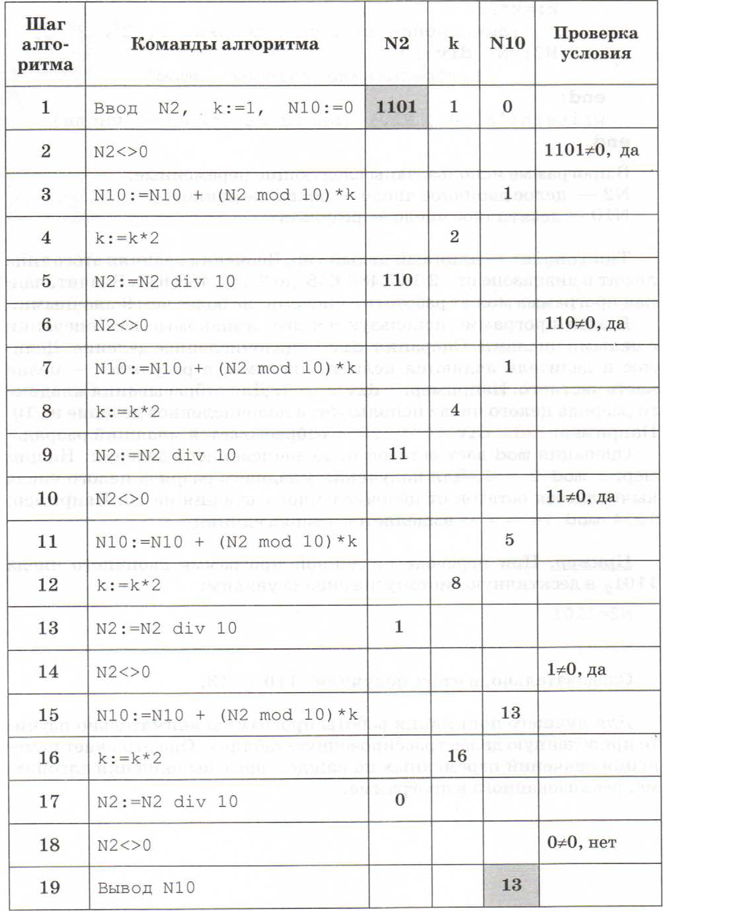
Программа перевода десятичного числа в двоичную систему счисления
Теперь познакомьтесь с программой перевода целого десятичного числа в двоичную систему счисления.
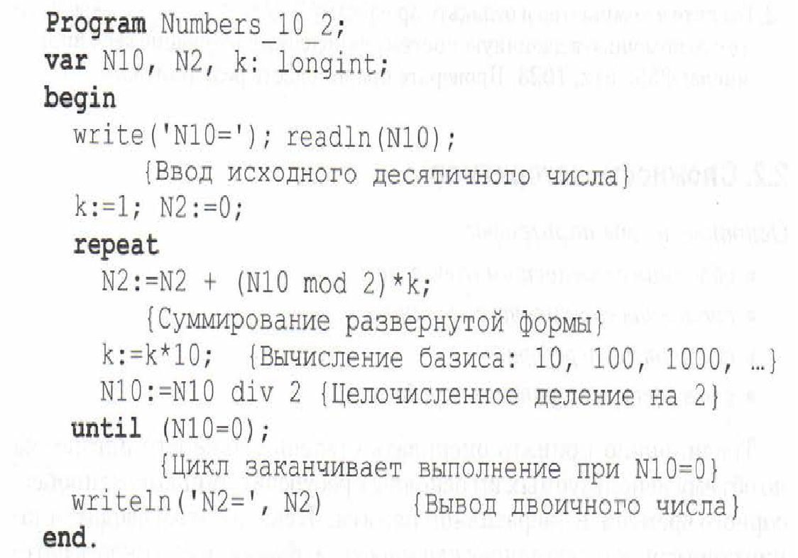
Здесь использованы те же обозначения, что и в предыдущей про-
грамме. Исходными данными являются: N10 — десятичное число.
Результат получается в переменной N2 — число в системе с основани-
ем 2.
В алгоритме используется циклс постусловием (гереаt ... ип+11).
Цикл повторяется до выполнения условия: N10 = 0.
Пример использования программы. Переведем число 25 в двоич-
ную систему счисления. Работа программы на экране компьютера
отразится следующим образом:
N10=25
N2=11001
Следовательно, в результате получили: 25 =110012.
Для лучшего понимания работы программы рекомендуем постро
ить трассировочную таблицу, наподобие предыдущей.
Коротко о главном:
Программирование перевода 10→2 и 2→10 основано на исполь
зовании операций над целыми числами: div — целочисленное деле
ние, mod — остаток от целочисленного деления. Вопросы и задания
1. Введите в компьютер и отладьте программу Numbers_2_10. Переведи-
те сее помощью в десятичную систему счисления следующие двоичные
числа: 111110; 1111111; 100000. Проверьте правильность результатов.
Но очевидно, что такое решение задачи нерационально. Здесь
каждая пара точек будет просматриваться дважды, например
при i = 1, j =2 и: i =2, j = 1. Для случая N = 100 циклы повторят вы
полнение 100. 100 = 10 000 раз.
Выполнение программы ускорится, если исключить повторения.
Исключитьтакже следует и совпадения значений i и j. Для исключе
ния повторений нужно в предыдущей программе изменить начало
внутреннего цикла с 1 на i + 1. Программа примет вид:
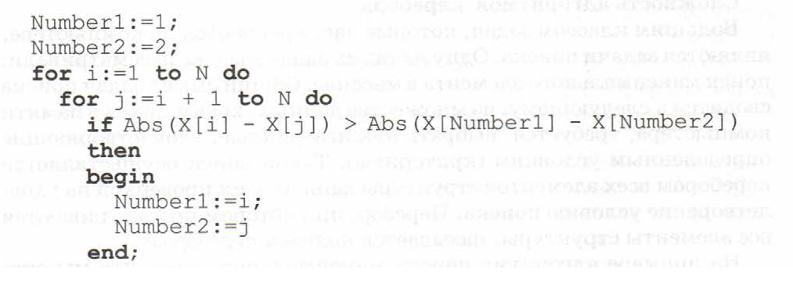
В таком алгоритме число повторений цикла будет равно N(N - 1)/2. При N = 100 получается 4950. Рассмотренный вариант алгоритма назовем перебором без повторений.
Замечание. Конечно, эту задачу можно было решить и другим способом, но в данном случае нас интересовал именно переборный алгоритм. В случае же точек, расположенных не на прямой, а на плоскости или в пространстве, поиск альтернативы переборному ал горитму становится весьма проблематичным. В следующей задаче требуется выбрать из массива Х без повторе ний все тройки чисел, сумма которых равна десяти. В этом случае алгоритм будет строиться из трех вложенных циклов. Внутренние циклы имеют переменную длину.
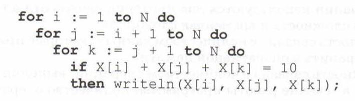
А теперь представьте, что из массива Х требуется выбрать всевоз
можные группы чисел, сумма которых равна десяти. Количество
чисел в группах может быть любым — от 1 до N. В этом случае коли
чество вариантов перебора резко возрастает, а сам алгоритм стано
вится нетривиальным.
Казалось бы, ну и что? Компьютер работает быстро! И все же по
считаем. Число различных групп из М объектов (включая пустую)
составляет 2^N. При N = 100 это будет 2¹⁰⁰ = 10³⁰. Компьютер, работа
ющий со скоростью миллиард операций в секунду, будет осуще
ствлять такой перебор приблизительно 10 лет. Даже исключение пе
рестановочных повторений не сделает такой переборный алгоритм
практически осуществимым.
Путь практической разрешимости подобных задач состоит в на
хождении способов исключения из перебора бесперспективных с
точки зрения условия задачи вариантов. Для некоторых задач это
удается сделать. К таким задачам относится задача поиска выхода
из лабиринта, задача о восьми ферзях (расставить на шахматной дос
ке восемь ферзей так, чтобы они не угрожали друг другу). Если бы
шахматные программы составлялись методом полного перебора все
возможных ходов, то ни один суперкомпьютер не смог бы в реальном
времени играть в шахматы. Очевидно, что в алгоритме программы
заложены знания стратегии и тактики игры в шахматы, которыми
владеют сильнейшие шахматисты, что существенно сокращает пе
ребор возможных ходов.
Впечатляющим примером решения фундаментальной математи
ческой проблемы методом поиска является Проект GIMPS (Great
Internet Mersenne Prime Search), направленный на поиск простых
чисел Мерсенна — последовательности чисел, подчиняющихся закону 2ᵖ, где р — простое число. В ноябре 2001 года в рамках данно-
го проекта было найдено число Мерсенна, содержащее в своей деся
тичной записи более 4 млн цифр. Десятки тысяч компьютеров по
всему миру, отдавая часть своих вычислительных ресурсов, работа
ли над этой задачей два с половиной года.
Коротко о главном
В программировании используются два критерия сложности ал горитма: объемная сложность и временная сложность.
Объемная сложность связана с количеством данных, которые при обработке нужно хранить в оперативной памяти.
Временная сложность связана с количеством операций, выполня емых процессором в течение работы программы; количество опера ций пропорционально времени выполнения программы.
Временная сложность оценивается как функция зависимости числа операций от объема данных и может быть линейной, квадра тичной и пр.
Задача перебора: из множества данных, хранящихся в памяти компьютера, требуется выбрать нужные данные, удовлетворяющие определенным условиям (критериям).
Временная сложность полного перебора может привести к превы шению разумного времени выполнения программы на компьютере.
Оптимизация алгоритма перебора состоит в исключении анализа бесперспективных вариантов.
Вопросы и задания
1. Почему временная сложность алгоритма зависит от его объемной слож- ности?
2. Составьте алгоритм поиска для следующей задачи: на координатной плоскости заданы своими координатами М точек. Найти две самые уда- ленные друг от друга точки. Оцените временную сложность алгоритма. Рассмотрите два варианта алгоритма: с полным и с неполным перебором и сравните их.
3. Составьте алгоритм для решения задачи, аналогичной предыдущей, с учетом того что точки расположены в трехмерном пространстве.
Основные темы параграфа:
*системы программирования;
*уровни языков программирования;
*трансляция и трансляторы;
*о двух способах трансляции;
*работа компилятора;
*работа интерпретатора.
Системы программирования
«Родным» языком ЭВМ является язык машинных команд (ЯМК).
Самые первые ламповые ЭВМ понимали только этот язык. В про
граммах на ЯМК данные обозначаются их адресами в памяти маши
ны, выполняемые операции — числовыми кодами. Программист
сам должен заботиться о расположении в памяти ЭВМ команд про
граммы и данных.
Современные программисты так не работают. Для программирования на современных компьютерах применяются системы программирования. В учебнике 7 класса (глава 2) говорилось о том, что
программное обеспечение компьютера делится на три части:
*системное ПО;
*прикладное ПО;
*системы программирования.
С первыми двумя видами программного обеспечения вы уже зна
комы. Системное ПО — это прежде всего операционные системы,
сервисные программы. Прикладное ПО — это многочисленные ре
дакторы, электронные таблицы, информационные системы, мате
матические пакеты, экспертные системы и многое другое, с чем ра
ботает абсолютное большинство пользователей.
Системы программирования предназначены для создания ком
пьютерных программ.
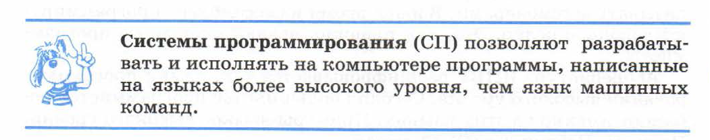
Уровни языков программирования
Что понимается под уровнем языка программирования? Понятие уровня языка связано со степенью его удаленности от языка
процессора компьютера и приближенности к естественному челове
ческому языку, к формальному языку предметной области (чаще
всего — математики). Чем выше уровень, тем дальше язык от ком
пьютера и ближе к человеку. Этот принцип схематически отражен
на рис. 2.17.
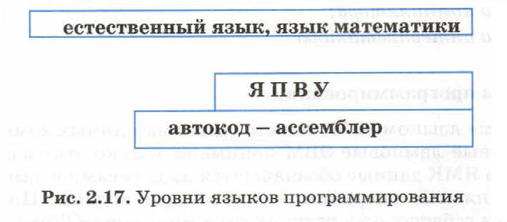
Язык машинных команд — это язык самого низкого уровня. Пер-
вые языки программирования, отличные от ЯМК, появились на ма-
шинах первого поколения, и назывались они автокодами.
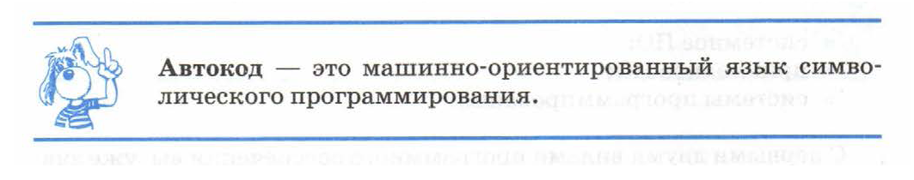
Одна команда на автокоде соответствует одной машинной коман-
де. Работая на автокоде, программист освобожден от необходимости
распределять память под программу и величины; ему не приходится
работать с адресами ячеек. Переменные величины и числовые кон
станты обозначаются так же, как в математике, коды операций
мнемонически буквами.
Начиная с машин третьего поколения, языки такого типа стали
называть ассемблерами. В наше время на ассемблере программиру
ют довольно редко. Это, как правило, делают системные програм
мисты.
Аббревиатура ЯПВУ расшифровывается так: языки программирования высокого уровня. Сегодня большинство программистов ра
ботают именно на этих языках. Примеры языков высокого уровня:
Паскаль, Бейсик, Си (С), Фортран.
Вот пример записи одной и той же команды сложения двух чисел
на трех языках разного уровня: ЯМК, автокоде и Паскале:
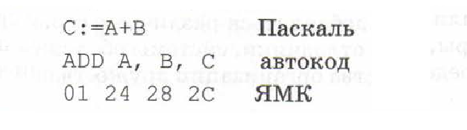
Видно, как с повышением уровня языка
повышается «понятность» команды (по-английски слово «АП,» означает «сложить»).
Однако чем понятнее язык для человека, тем
он непонятнее для процессора компьютера.
Процессор понимает только ЯМК. Человеку
же легче писать программы на языках более
высокого уровня. Как же быть?
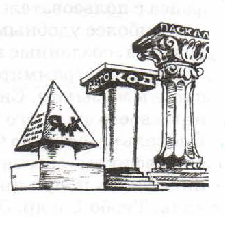
Трансляция и трансляторы
Как сделать так, чтобы человек мог писать программы на автокоде или Паскале, а компьютер мог исполнять эти программы? Ответ
на поставленный вопрос такой же, как на вопрос «Как мне общаться
с японцем, если я не знаю японского языка?». Нужен переводчик!
По-английски «переводчик» — «translator». 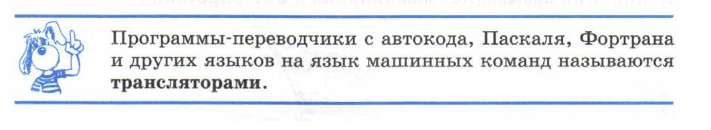
Таким образом, компьютер сам производит перевод под управле-
нием программы-транслятора. Процесс перевода программы на
язык машинных команд называется трансляцией. Прежде чем вы-
полнить, например, программу на Паскале, ее нужно оттранслиро-
вать. Трансляцию можно представить как спуск с верхней ступень-
ки языка на самую первую ступеньку — ЯМК (рис. 2.18).
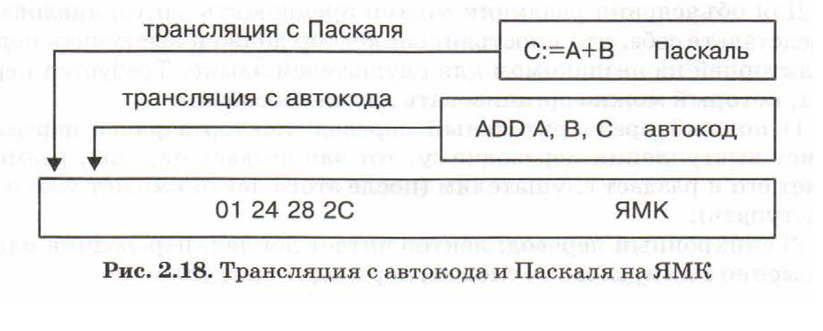
Транслятор является обязательным элементом любой системы
программирования. Первые СП включали в себя только транслятор.
Затем к транслятору стали добавляться различные сервисные сред-
ства: текстовые редакторы, отладчики, системы обслуживания про-
граммных библиотек, средства организации дружественного интер-
фейса с пользователем.
Наиболее удобными для пользователя стали системы программи-
рования, созданные на персональных компьютерах.
Язык программирования, с которым работает СП, называется ее
входным языком. Системы программирования именуются по назва-
нию своего входного языка. Например: «система Бейсик», «система
Паскаль», «система Фортран». Иногда в название систем включают-
ся префиксы, обозначающие, например, ее фирменное происхожде-
ние. Очень популярны системы с приставкой «Турбо»: Турбо Пас-
каль, Турбо С и др. Это системы программирования, разработанные
фирмой Вогland.
О двух способах трансляции
Реализовать тот или иной язык программирования на компьюте-
ре — это значит создать транслятор с этого языка для данного ком-
пьютера. Существуют два принципиально различных метода транс-
ляции. Они называются компиляция и интерпретация.
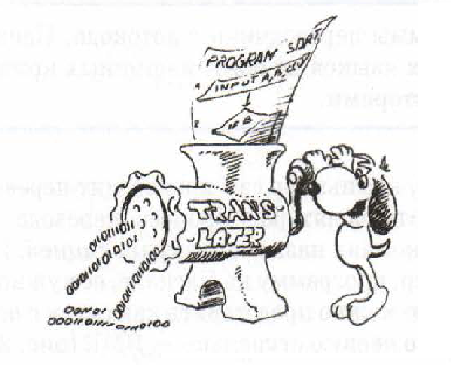
Для объяснения различия можно предложить такую аналогию:
представьте себе, что иностранный лектор должен выступить перед
аудиторией на незнакомом для слушателей языке. Требуется пере-
вод, который можно организовать двумя способами:
1) полный предварительный перевод: лектор заранее передает
текст выступления переводчику, тот записывает перевод, размно-
жает его и раздает слушателям (после этого лектор может уже и не
выступать);
2) синхронный перевод: лектор читает доклад, переводчик одно-
временно с ним, слово за словом, переводит выступление.
Компиляция является аналогом полного предварительного перевода; интерпретация — аналог синхронного перевода. Транслятор, работающий по принципу компиляции, называется компилятором. Транслятор, работающий методом интерпретации, называется интерпретатором.
Работа компилятора
При компиляции в память компьютера загружается программа-компилятор. Она воспринимает текст программы на ЯПВУ как
исходную информацию. Компилятор производит синтаксический
контроль программы и при обнаружении ошибок выводит диагностические сообщения. Если ошибок нет, то результатом компиляции
является программа на языке машинных команд.
Затем компилятор удаляется из оперативной памяти. В памяти
остается только программа на ЯМК, которая выполняется для получения результатов.
На рисунке 2.19 схематически показан процесс выполнения программы на ЯПВУ с использованием компиляции. Прямоугольниками изображены программы в машинных кодах, овалами — обрабатываемая и конечная информация.
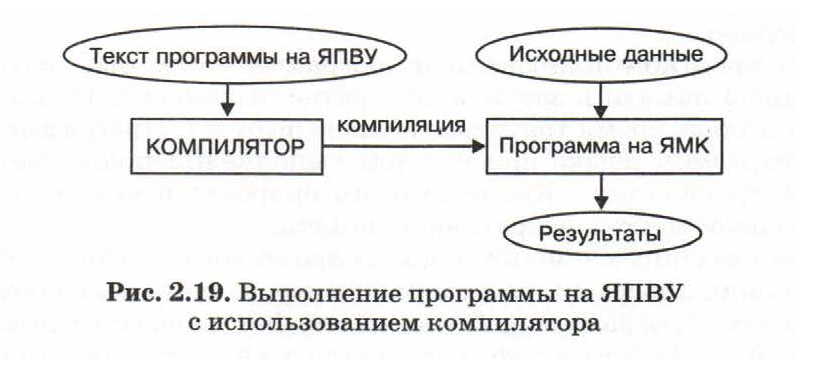
Конечно, компиляция с автокода (ассемблера) много проще, чем
с языков высокого уровня. Для этой процедуры часто применяют
специальный термин — ассемблирование. А под словом «ассемблер» понимается не только язык программирования, но и транслятор с него.
Работа интерпретатора
Интерпретатор в течение всего времени работы программы находится во внутренней памяти (иногда для этого используется ПЗУ).
В ОЗУ помещается программа на ЯПВУ. Интерпретатор «читает» ее
первый оператор, переводит его в машинные команды и тут же организует выполнение этих команд. Затем переходит к переводу и выполнению следующего оператора, и так до конца программы. При этом результаты предыдущих переводов в памяти не сохраняются.
При повторном выполнении одного и того же оператора в цикле он
снова будет транслироваться. Перед трансляцией каждого оператора происходит его синтаксический анализ.
На рисунке 2.20 схематически показан процесс выполнения программы на ЯПВУ с использованием интерпретатора.
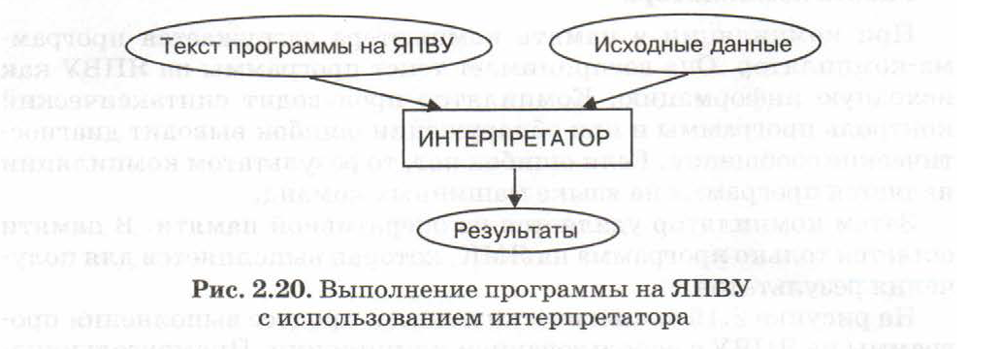
Таким образом, при компиляции трансляция и исполнение программы идут последовательно друг за другом. При интерпретации —
параллельно.
Один раз откомпилированная программа может быть сохранена
во внешней памяти и затем многократно выполнена. На компиляцию машинное время тратиться больше не будет. Программа на интерпретируемом языке при каждом выполнении подвергается повторной трансляции. Кроме того, интерпретатор может занимать
значительное место в оперативной памяти.
Из-за указанных причин использование компиляторов удобнее
для больших программ, требующих быстрого счета и большого объема памяти. Программы на Паскале, Си, Фортране всегда компилируются. Язык Бейсик часто реализуется через интерпретатор.
Коротко о главном
Для разработки программ программисты используют системы
программирования (СП).
Язык программирования, с которым позволяет работать данная
СП, называется ее входным языком.
Язык процессора компьютера — это язык машинных команд —
ЯМК.
Уровень языка программирования определяется степенью его
удаленности от ЯМК (чем дальше, тем выше уровень).
Автокод (ассемблер) — это машинно-ориентированный язык символического программирования.
Наиболее удобным средством программирования являются языки высокого уровня (ЯПВУ). Сегодня с ними работает большинство
программистов.
Трансляция — это процесс перевода текста программы на язык
машинных команд. Программа-переводчик называется транслятором.
Существуют два способа трансляции: компиляция и интерпретация.
При компиляции сначала весь текст программы переводится на ЯМК,
затем производится ее исполнение. При интерпретации перевод и исполнение происходят параллельно.
Вопросы и задания
1. Что такое язык программирования?
2. Что обозначает понятие «уровень языка программирования» ?
3. К какому уровню относятся языки типа автокод (ассемблер)?
4. Почему языки программирования высокого уровня называют машинно-независимыми языками?
5. Какие из языков программирования высокого уровня вы знаете?
6. Что такое трансляция? Что такое транслятор?
7. В чем различие между компиляцией и интерпретацией?
Основные темы параграфа:
*первые шаги автоматизации программироания;
*первые языки высокого уровня:Кобол и Фортран;
*языки процедурного программирования;
*Языки искусственного интеллекта.
*современные языки объектно-ориентированного и визуального программирования;
*программны продукт и его жизненны цикл.
Первые шаги автоматизации программирования
Программы для первых ЭВМ программисты писали на языках машинных команд. Это очень трудоемкий и длительный процесс. Проходило значительное время между началом составления программы
и началом ее использования. Решить эту проблему можно было
лишь путем создания средств автоматизации программирования.
2.4.История языков программирования
Тест по параграфу 2.1